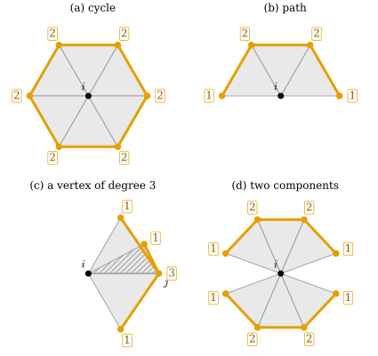
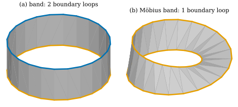
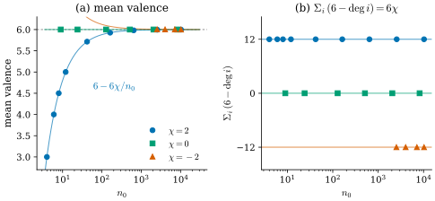

33.4 Simplicial Manifolds
Goals
- vertex link가 cycle(또는 path)이라는 조건으로 simplicial surface를 정의하고, 그것이 “edge마다 triangle 둘(또는 하나)과 vertex 둘레의 fan 하나”와 같은 조건임을 증명할 수 있다.
- simplicial surface의 boundary가 서로 만나지 않는 loop들임을 증명하고, simplicial manifold를 일반 dimension에서 정의할 수 있다.
- \(n_0, n_1, n_2\) 사이의 관계 \(3n_2 = 2n_1\)과 \(\sum_i(6 - \deg i) = 6\chi\)를 증명하고, 평균 valence가 6으로 가는 이유를 설명할 수 있다.
Prerequisites
- Proposition 33.2.13과 Proposition 33.2.14: link의 공식, vertex의 star는 link 위의 cone
- Definition 33.2.18: pure subcomplex의 boundary
- Definition 33.3.13: consistent orientation, Proposition 33.3.18: orientation propagation
- (비교용) Definition 31.1.3, Proposition 31.1.7: Track 1의 manifold mesh와 개수 공식
Motivation
Proposition 33.3.18은 “edge마다 triangle이 둘 이하”라는 가정을 두었다. edge에 triangle이 셋 붙으면 orientation이 불가능했다(Non-example 33.3.15). 이런 가정을 하나씩 따로 두는 대신, “complex가 surface처럼 생겼다”는 조건 하나로 묶고 싶다.
smooth surface는 모든 점 근처가 평면의 disk처럼 보이는 공간이다(Definition 0.6.1). Proposition 33.2.22에서 vertex의 closed star가 disk 모양이면 그 테두리가 link라는 것을 보았다. 거꾸로 link가 원 하나(cycle)이면 closed star는 그 원 위에 세운 cone, 곧 disk다. 그래서 surface의 조건을 “모든 vertex의 link가 cycle”이라는 유한한 조합적 조건으로 쓸 수 있다. 이 절은 그 정의에서 출발해 boundary, orientation, 개수의 관계를 차례로 증명한다.
Cycles and Paths
vertex link는 triangle이 없는 1-dimensional complex, 곧 graph다(Proposition 33.2.22의 증명). graph의 두 가지 모양에 이름을 붙이자. 서로 다른 vertex \(j_1, \dots, j_m\) (\(m \ge 3\))과 edge \(\{j_1, j_2\}, \dots, \{j_{m-1}, j_m\}, \{j_m, j_1\}\)만으로 된 graph를 길이 \(m\)의 cycle(고리)이라 하고, 서로 다른 vertex \(j_0, \dots, j_m\) (\(m \ge 1\))과 edge \(\{j_{r}, j_{r+1}\}\) (\(0 \le r \lt m\))만으로 된 graph를 길이 \(m\)의 path(경로)라 한다. simplicial complex 안에서는 두 vertex 사이에 edge가 하나뿐이므로 cycle의 길이는 3 이상이다. graph의 vertex \(j\)에 붙은 edge의 수를 \(j\)의 degree라 한다.
Lemma 33.4.1 (graphs of maximal degree two). \(G\)가 isolated vertex가 없는 유한 graph라 하자. (a) 모든 vertex의 degree가 2이면 \(G\)는 서로 만나지 않는 cycle들의 합집합이다. (b) \(G\)가 connected이고(edge를 따라 어느 vertex에서나 다른 vertex로 갈 수 있고) 모든 degree가 2 이하이면, \(G\)는 cycle 하나이거나(degree 1인 vertex가 없을 때) path 하나다(그렇지 않을 때). path이면 degree 1인 vertex는 정확히 둘, 곧 양 끝이다.
Proof idea: degree가 2 이하이면 “방금 지나온 edge가 아닌 edge로 나가기”가 한 가지로 정해진다. 그렇게 걸으면 처음 vertex로 돌아오거나 막다른 끝에 닿는다.
Proof. vertex \(w_0\)에서 출발해, 매번 방금 지나온 edge가 아닌 edge로 나가는 걸음 \(w_0, w_1, w_2, \dots\)를 생각하자. 처음 반복되는 vertex는 \(w_0\)이다: \(w_s = w_r\) (\(r \lt s\))인 첫 \(s\)를 잡고 \(r \ge 1\)이라 하자. 그러면 \(w_r\)에는 edge \(\{w_{r-1}, w_r\}\), \(\{w_r, w_{r+1}\}\), \(\{w_{s-1}, w_s\}\)가 붙어 있다. 셋째가 첫째와 같다면 \(w_{s-1} = w_{r-1}\)이 더 이른 반복이고, 둘째와 같다면 \(w_{s-1} = w_{r+1}\)인데 \(s - 1 \gt r + 1\)이면 더 이른 반복, \(s - 1 = r + 1\)이면 방금 지나온 edge로 되돌아간 것이다. 어느 경우도 불가능하므로 세 edge는 서로 다르고, degree가 3 이상이 되어 가정에 어긋난다.
(a) 모든 degree가 2이면 걸음은 끝나지 않고, 유한하므로 반복이 생기며, 위에서 처음 반복은 \(w_s = w_0\)이다. \(s = 1\)은 자기 자신과의 edge라 불가능하고 \(s = 2\)는 지나온 edge로 되돌아간 것이라 불가능하므로 \(s \ge 3\)이고, \(w_0, \dots, w_{s-1}\)은 cycle을 이룬다. 그 vertex들의 edge 둘은 모두 이 cycle에 쓰였으므로 cycle은 \(G\)의 나머지와 만나지 않는다. cycle을 떼어 내고 남은 graph(여전히 모든 degree가 2)에 같은 논증을 되풀이한다.
(b) degree 1인 vertex가 없으면 모든 degree가 2이고, (a)와 connected라는 가정에서 cycle 하나다. degree 1인 vertex \(w_0\)이 있으면 거기서 걸음을 시작한다. \(w_0\)으로 돌아오는 것은 \(w_0\)의 degree가 1이라 불가능하므로 위의 사실에 의해 반복이 없고, 유한하므로 더 나갈 edge가 없는 vertex, 곧 degree 1인 vertex에서 멈춘다. 지나온 vertex들은 path를 이루고, 그 vertex들의 edge는 모두 path에 쓰였다. connected이므로 path가 \(G\) 전체다. degree 1인 vertex는 path의 양 끝 둘뿐이다.
Simplicial Surfaces
Definition 33.4.2 (simplicial surface). 모든 vertex의 link가 cycle 하나인 pure 2-complex를 simplicial surface(단체 곡면)라 한다. boundary가 없다는 것을 강조할 때는 closed simplicial surface라 한다.
Definition 33.4.3 (simplicial surface with boundary). 모든 vertex의 link가 cycle 하나이거나 path 하나인 pure 2-complex를 simplicial surface with boundary(경계를 갖는 단체 곡면)라 한다. link가 cycle인 vertex를 interior vertex, path인 vertex를 boundary vertex라 한다.
두 정의는 Crane의 정의와 같다 [Cr §2.3]. 이 장에서 “simplicial surface”라고만 쓰면 boundary가 없는 것을 뜻하고, boundary를 허락할 때는 그렇게 밝힌다. link 조건은 vertex에 대한 조건이지만 edge에 대한 정보도 담고 있다. Proposition 33.2.14에서 link의 vertex \(j\)는 edge \(\{i, j\}\)에, link의 edge \(\{j, k\}\)는 triangle \(\{i, j, k\}\)에 대응했기 때문이다.

dgdec.link로 계산했다. 읽는 법: 주황 굵은 선과 점이 \(\operatorname{Lk}(i)\)이고, 상자 안의 숫자가 link라는 graph에서 그 vertex의 degree다. 볼 것: link vertex \(j\)의 degree는 edge \(\{i, j\}\)를 포함하는 triangle의 수와 같다. (a)는 모든 수가 2인 connected graph라서 cycle, (b)는 양 끝이 1인 path다. (c)에서 \(j\)의 수 3은 edge \(\{i, j\}\)에 triangle이 셋 붙었다는 뜻이다. (d)는 모든 수가 2 이하이지만 link가 두 조각이다. 본문과의 연결: Proposition 33.4.4. 같은 네 경우를 vertex 근처의 모양(disk인가)으로 본 그림은 Figure 31.1.1이다.Figure 33.4.1의 숫자를 따라가 보자. (a)에서는 모든 link vertex에 2가 적혀 있다. \(i\)에서 나가는 edge마다 triangle이 정확히 둘 붙어 있다는 뜻이다. (b)의 양 끝 1은 \(i\)에서 나가는 edge 가운데 둘이 triangle 하나에만 붙어 있다는 뜻이고, 이 두 edge가 boundary edge다. (c)의 3은 edge \(\{i, j\}\)가 non-manifold edge라는 뜻이다. (d)는 수만 보아서는 문제가 없다. 그러나 link가 끊어져 있어, \(i\)를 둘러싼 triangle들을 \(i\)를 포함하는 edge를 건너며 한 번에 돌 수 없다. 이 관찰을 정리한 것이 다음 명제다.
Proposition 33.4.4 (the link condition in terms of edges and fans). \(\mathcal{K}\)가 pure 2-complex이고 \(i\)가 vertex라 하자. \(i\)를 포함하는 두 triangle이 “\(i\) 둘레로 이어져 있다”는 것은, \(i\)를 포함하는 triangle의 열로 하나에서 다른 하나로 갈 수 있고 이웃한 두 triangle이 \(i\)를 포함하는 edge를 공유한다는 뜻이다.
- (a) \(\operatorname{Lk}(i)\)는 triangle도 isolated vertex도 없는 graph이고, link vertex \(j\)의 degree는 edge \(\{i, j\}\)를 포함하는 triangle의 수다.
- (b) \(\operatorname{Lk}(i)\)가 cycle일 필요충분조건은 \(i\)를 포함하는 모든 edge가 triangle 정확히 둘에 속하고, \(i\)를 포함하는 triangle들이 모두 \(i\) 둘레로 이어져 있는 것이다.
- (c) \(\operatorname{Lk}(i)\)가 path일 필요충분조건은 \(i\)를 포함하는 모든 edge가 triangle 하나 또는 둘에 속하고, 그중 하나에만 속하는 것이 정확히 둘이며, \(i\)를 포함하는 triangle들이 모두 \(i\) 둘레로 이어져 있는 것이다.
Proof. (a) \(\operatorname{Lk}(i)\)에 triangle \(\{a, b, c\}\)가 있다면 \(\{i, a, b, c\} \in \mathcal{K}\)인데 \(\mathcal{K}\)는 2-dimensional이다. link vertex \(j\)에 대해 \(\{i, j\} \in \mathcal{K}\)이고, pure이므로 \(\{i, j\}\)를 포함하는 triangle \(\{i, j, k\}\)가 있어 \(\{j, k\}\)가 \(j\)에 붙은 link edge다. Proposition 33.2.14의 bijection \(\{j, k\} \leftrightarrow \{i, j, k\}\)에서, \(j\)에 붙은 link edge는 \(\{i, j\}\)를 포함하는 triangle과 일대일로 대응한다.
(b), (c) 같은 bijection에서 \(i\)를 포함하는 두 triangle \(\{i, j, k\}\), \(\{i, j, l\}\)이 edge \(\{i, j\}\)를 공유하는 것은 link edge \(\{j, k\}\), \(\{j, l\}\)이 vertex \(j\)를 공유하는 것과 같다. 그러므로 “triangle들이 \(i\) 둘레로 이어져 있다”는 “link graph의 edge들이 vertex를 공유하며 이어져 있다”, 곧 (isolated vertex가 없으므로) link가 connected라는 것과 같다. 이제 (a)와 Lemma 33.4.1(b)를 쓴다. cycle은 connected이고 모든 degree가 2이며, 거꾸로 connected이고 모든 degree가 2인 graph는 cycle이다. path는 connected이고 degree가 1 또는 2이며 1이 정확히 둘이고, 거꾸로 connected이고 degree가 2 이하이며 1이 있는 graph는 path다. degree를 triangle의 수로 바꿔 읽으면 (b), (c)다.
Corollary 33.4.5 (surfaces in terms of edges and fans). pure 2-complex \(\mathcal{K}\)가 simplicial surface with boundary일 필요충분조건은 다음 둘이다.
- (E) 모든 edge가 triangle 하나 또는 둘에 속한다.
- (V) 모든 vertex에서, 그 vertex를 포함하는 triangle들이 모두 그 vertex 둘레로 이어져 있다.
boundary가 없는 simplicial surface일 필요충분조건은 (E) 대신 “모든 edge가 triangle 정확히 둘에 속한다”는 것과 (V)다. 특히 link 조건은 edge 조건 (E)를 함의한다.
Proof. link가 cycle이나 path이면 Proposition 33.4.4(b), (c)에서 (V)와, 각 vertex를 포함하는 edge에 대한 (E)가 나온다. 모든 edge는 어떤 vertex를 포함하므로 (E)가 성립한다. 거꾸로 (E)와 (V)를 가정하자. vertex \(i\)는 pure이므로 어떤 triangle에 속하고, Proposition 33.4.4(a)에 의해 \(\operatorname{Lk}(i)\)는 edge가 있고 isolated vertex가 없으며 모든 degree가 1 또는 2인 graph다. (V)에 의해 connected이므로 Lemma 33.4.1(b)에 의해 cycle이나 path다. 둘째 문장도 같다. 모든 edge에 triangle이 둘이면 모든 degree가 2라서 path가 될 수 없다.
Example 33.4.6 (simplicial surfaces).
boundary가 없는 것: tetrahedron의 boundary(link는 모두 3-cycle), 정팔면체(4-cycle), 정이십면체(5-cycle), dgmesh.icosphere(level)(5-cycle과 6-cycle), dgmesh.torus_mesh(2, 0.8, nu, nv)(모두 6-cycle, \(nu, nv \ge 3\)). boundary가 있는 것: dgmesh.grid_mesh, 꼬임 없는 band와 Möbius band(Proposition 33.3.17). Möbius band도 simplicial surface with boundary다. surface인지는 orientability와 무관하다.
Verification: verify/v-33-4-simplicial-manifolds.py
Non-example 33.4.7. (a) triangle 셋이 한 edge를 공유하는 “책”(Figure 33.4.1(c)): 그 edge의 끝점의 link에 degree 3인 vertex가 있다. (b) 두 fan이 한 vertex에서만 만나는 “나비”(Figure 33.4.1(d)): link가 두 조각이다. 모든 edge가 triangle 둘 이하에 속하므로 (E)는 성립하고 (V)가 깨진다. (c) Figure 33.1.2(a)처럼 pure가 아닌 complex. dangling edge의 끝점에서 link에 isolated vertex가 생긴다.
Verification: verify/v-33-4-simplicial-manifolds.py
The Boundary of a Simplicial Surface
Proposition 33.4.8 (the boundary is a union of loops). \(\mathcal{K}\)가 simplicial surface with boundary이면 \(\operatorname{bd}(\mathcal{K})\)(Definition 33.2.18)의 vertex는 정확히 boundary vertex이고, 각각 boundary edge 정확히 둘에 속한다. 따라서 \(\operatorname{bd}(\mathcal{K})\)는 서로 만나지 않는 cycle들의 합집합이고, \(\operatorname{bd}(\operatorname{bd}(\mathcal{K})) = \varnothing\)이다. \(\mathcal{K}\)가 boundary가 없는 simplicial surface이면 \(\operatorname{bd}(\mathcal{K}) = \varnothing\)이다.
Proof. boundary edge는 triangle 하나에만 속하는 edge다. vertex \(i\)에서 Proposition 33.4.4(a)에 의해 boundary edge \(\{i, j\}\)는 link에서 degree 1인 vertex \(j\)와 대응한다. link가 cycle이면 그런 \(j\)가 없고, path이면 양 끝의 정확히 둘이다(Lemma 33.4.1(b)). 그러므로 \(\operatorname{bd}(\mathcal{K})\)의 vertex(어떤 boundary edge의 끝점)는 boundary vertex이고, 거꾸로 boundary vertex는 boundary edge 둘의 끝점이다. \(\operatorname{bd}(\mathcal{K})\)는 isolated vertex가 없고 모든 degree가 2인 graph이므로 Lemma 33.4.1(a)에 의해 cycle들의 합집합이다. 1-dimensional pure complex로서 \(\operatorname{bd}(\mathcal{K})\)의 boundary는 edge 하나에만 속하는 vertex의 closure인데, 그런 vertex가 없으므로 공집합이다.

lib/ch33.py의 cylinder_band(24)), (b) Möbius band(dgmesh.mobius_mesh(24)). 둘 다 중심원의 반지름 1, 반폭 0.35, triangle 48개이고, 한 방향에서 본 그림이다. 읽는 법: 회색이 triangle, 굵은 색 선이 boundary edge(triangle 하나에만 속하는 edge)다. 색은 Proposition 33.4.8의 loop 하나하나를 구별한다. 볼 것: (a)의 boundary는 edge 24개짜리 loop 둘(파랑, 주황)이다. (b)의 boundary는 바깥 테두리와 안쪽 테두리가 꼬임에서 이어져 edge 48개짜리 loop 하나다. 두 띠는 \(n_0, n_1, n_2\)가 \((48, 96, 48)\)으로 같고 \(\chi = 0\)도 같다. 그런데 boundary loop의 수가 다르다. 본문과의 연결: Proposition 33.4.8과 Example 33.4.9. 두 띠를 돌려 볼 수 있는 interactive version이 있다.Figure 33.4.2에서 주황 선을 손가락으로 따라가 보자. (a)에서는 아래 테두리를 한 바퀴 돌면 출발점으로 돌아오고, 위 테두리는 따로 남는다. (b)에서는 바깥 테두리를 따라가다 꼬인 곳을 지나면 안쪽 테두리로 넘어가고, 한 바퀴를 더 돌아야 출발점에 온다. 어느 경우든 boundary vertex마다 boundary edge가 둘이라서 걸음이 막히거나 갈라지지 않는다. 이것이 Proposition 33.4.8의 내용이다.
Example 33.4.9 (boundary loops).
vertex가 \(5 \times 5\)인 dgmesh.grid_mesh는 boundary edge 16개가 loop 하나를 이룬다. 꼬임 없는 band(정사각형 \(n\)개)는 \(n\)개짜리 loop 둘, Möbius band는 \(2n\)개짜리 loop 하나다. 닫힌 icosphere와 torus mesh는 boundary edge가 없다.
Verification: verify/v-33-4-simplicial-manifolds.py
Simplicial Manifolds in Any Dimension
link가 cycle이라는 조건은 “link가 원 \(S^1\)”이라는 말로 읽을 수 있다. 이렇게 읽으면 다른 dimension으로 바로 넓어진다. \(\abs{\mathcal{S}}\)가 \(S^{m}\)과 homeomorphic한 complex \(\mathcal{S}\)를 simplicial \(m\)-sphere라 하자. \(m = 0\)이면 vertex 두 개(edge 없음)이고, \(m = 1\)이면 cycle이다. 1-dimensional complex의 realization이 원과 homeomorphic한 것이 cycle일 때뿐이라는 사실은 여기서 증명하지 않고 받아들인다(Chapter 3).
Definition 33.4.10 (simplicial manifold). 모든 vertex의 link가 simplicial \((n-1)\)-sphere인 pure \(n\)-complex를 simplicial \(n\)-manifold, 또는 simplicial manifold(단체 다양체)라 한다. boundary를 허락할 때는 link가 simplicial \((n-1)\)-sphere이거나, realization이 \((n-1)\)-dimensional closed ball과 homeomorphic인 complex이기를 요구한다.
\(n = 2\)이면 이것은 Definition 33.4.2다. \(n = 1\)이면 link가 vertex 두 개, 곧 모든 vertex의 degree가 2인 graph다. \(n = 3\)이면 tetrahedron mesh의 vertex마다 둘레의 triangle들이 sphere 모양의 껍질을 이룬다는 조건이다. dimension이 커지면 link가 sphere인지 판정하는 것 자체가 어려운 문제가 되므로, 이 장은 \(n \le 2\)에서만 계산에 쓴다.
Example 33.4.11. (a) 길이 \(m \ge 3\)인 cycle은 simplicial 1-manifold다. 각 vertex의 link는 양옆의 두 vertex다. (b) \(\{0, \dots, 4\}\)의 공집합이 아니고 자신이 아닌 부분집합 전체(4-simplex의 boundary, Exercise 33.1.2)는 simplicial 3-manifold다. Proposition 33.2.14에 의해 \(\operatorname{Lk}(v)\)는 \(v \notin \tau\)이고 \(\tau \cup \{v\} \ne \{0, \dots, 4\}\)인 \(\tau\), 곧 나머지 네 vertex의 공집합이 아니고 자신이 아닌 부분집합 전체다. 이것은 tetrahedron의 boundary와 같은 complex이고, 그 realization은 \(S^2\)와 homeomorphic하다(Figure 33.1.3(a)의 겉면).
Verification: verify/v-33-4-simplicial-manifolds.py
Non-example 33.4.12. (a) degree 3인 vertex가 있는 graph(예: 가운데 vertex에 edge 셋이 붙은 “Y”)는 simplicial 1-manifold가 아니다. 그 vertex의 link가 vertex 셋이다. (b) 두 tetrahedron \(\{0,1,2,3\}\)과 \(\{0,4,5,6\}\)을 vertex \(0\)에서만 붙인 pure 3-complex는 simplicial 3-manifold가 아니다. \(\operatorname{Lk}(0)\)이 서로 만나지 않는 두 triangle(각각 realization이 disk)이라서 sphere가 아니다. dimension 2의 “나비”(Non-example 33.4.7(b))가 한 단계 올라간 것이다.
Proposition 33.4.13 (simplicial 1-manifolds). simplicial 1-manifold는 서로 만나지 않는 cycle들의 합집합이다. 모든 vertex의 link가 vertex 하나 또는 둘인 pure 1-complex는 서로 만나지 않는 cycle과 path들의 합집합이다.
Proof. pure 1-complex는 isolated vertex가 없는 graph이고, Proposition 33.2.14에 의해 vertex \(v\)의 link의 vertex 수는 \(v\)의 degree다. 첫 문장은 Lemma 33.4.1(a)다. 둘째 문장: graph를 connected component(edge로 이어진 최대 부분)로 나누면, 각 component는 connected이고 모든 degree가 1 또는 2이므로 Lemma 33.4.1(b)에 의해 cycle이나 path다.
Orientable Simplicial Surfaces
Definition 33.4.14 (orientable simplicial surface). consistent orientation(Definition 33.3.13)을 갖는 simplicial surface(boundary가 있어도 된다)를 orientable simplicial surface(가향 단체 곡면)라 한다.
simplicial surface에서는 Corollary 33.4.5에 의해 모든 edge에 triangle이 둘 이하이므로, Proposition 33.3.18의 가정 가운데 edge에 관한 것이 저절로 성립한다. 남은 가정인 edge-connected도 1-skeleton의 연결로 바꿀 수 있다.
Lemma 33.4.15 (connected surfaces are edge-connected). simplicial surface with boundary \(\mathcal{K}\)의 1-skeleton이 connected이면, \(\mathcal{K}\)의 임의의 두 triangle은 edge를 공유하는 triangle의 열로 이어진다.
Proof. triangle \(f \ni i\)와 \(g \ni j\)를 잡고, 1-skeleton에서 \(i = v_0, v_1, \dots, v_m = j\)인 path를 잡자. edge \(\{v_r, v_{r+1}\}\)은 pure이므로 어떤 triangle \(h_r\)에 속한다. \(f\)와 \(h_0\)은 둘 다 \(v_0\)을 포함하므로 Corollary 33.4.5의 (V)에 의해 \(v_0\) 둘레로 이어진다. \(h_{r-1}\)과 \(h_r\)은 둘 다 \(v_r\)을 포함하므로 같은 이유로 이어지고, \(h_{m-1}\)과 \(g\)는 \(v_m\)을 포함하므로 이어진다. 이 열들을 이으면 된다. \(m = 0\)(곧 \(i = j\))이면 \(f\)와 \(g\)가 둘 다 \(i\)를 포함하므로 (V)에서 바로 이어진다.
Corollary 33.4.16 (orientations of a connected surface). 1-skeleton이 connected인 simplicial surface with boundary는 orientable이 아니거나, consistent orientation을 정확히 두 개 가진다. orientable인지는 Proposition 33.3.18(b)의 algorithm이 정확히 판정한다.
Proof. Corollary 33.4.5에서 edge마다 triangle이 둘 이하이고, Lemma 33.4.15에서 edge-connected이므로 Proposition 33.3.18을 그대로 쓸 수 있다.
Example 33.4.17. icosphere, torus mesh, grid mesh, 꼬임 없는 band는 orientable simplicial surface다. 각각의 face list 자체가 consistent orientation이다(Example 33.3.14, band는 Proposition 33.3.17).
Non-example 33.4.18. Möbius band(Proposition 33.3.17)와 Klein bottle(Exercise 33.3.6)은 simplicial surface이지만 orientable이 아니다. Klein bottle은 boundary가 없는 simplicial surface이고 torus mesh와 \(n_0, n_1, n_2\)가 같을 수 있으므로, 개수만으로는 orientability를 알 수 없다.
manifold 조건이 왜 필요한지 정리해 두자. Section 33.5의 halfedge mesh는 edge마다 양쪽에 face가 하나씩 있고 vertex 둘레를 한 바퀴 돌 수 있다는 것을 자료구조에 박아 넣는다. 이것이 Corollary 33.4.5의 (E)와 (V)다. Chapter 38의 discrete immersion은 vertex star마다 disk 모양을 요구하고(Section 38.4), Chapter 40의 angle defect는 vertex 둘레를 한 바퀴 도는 각의 합으로 정의된다(Section 40.1). 셋 모두 link가 cycle이어야 뜻을 가진다.
Counting: \(n_0\), \(n_1\), \(n_2\), and \(\chi\)
simplicial surface에서는 개수 사이에 관계가 생긴다. 근거는 “edge에 triangle이 몇 개 붙는가”를 정한 (E)다.
Proposition 33.4.19 (edge–triangle incidences). simplicial surface with boundary에서 boundary edge의 수를 \(n_1^\partial\)이라 하면 \(3n_2 = 2n_1 - n_1^\partial\)이다. 특히 boundary가 없는 simplicial surface에서는 \(3n_2 = 2n_1\)이다.
Proof. (edge, 그 edge를 포함하는 triangle)의 쌍을 두 가지로 센다. triangle마다 edge가 3개이므로 쌍은 \(3n_2\)개다. Corollary 33.4.5(E)에 의해 edge마다 triangle이 1개(boundary edge) 또는 2개이므로 쌍은 \(n_1^\partial + 2(n_1 - n_1^\partial) = 2n_1 - n_1^\partial\)개다.
세 개수를 번갈아 더한 \(\chi = n_0 - n_1 + n_2\)를 \(\mathcal{K}\)의 Euler characteristic(오일러 지표)이라 한다. 이 수가 같은 surface를 어떻게 삼각분할해도 같다는 topological invariance는 Section 40.1이 진술과 Proof sketch로 다루고(일반 증명은 Section 10.3), 이 장은 \(\chi\)를 개수로만 쓴다. 다음 사실도 증명 없이 진술만 해 둔다. connected이고 boundary가 없는 orientable surface는 손잡이(handle)를 \(g\)개 붙인 sphere와 homeomorphic하고(classification theorem), 이때 \(g\)를 genus(종수)라 하며
이다(Euler–Poincaré formula). boundary loop가 \(b\)개 있으면 \(\chi = 2 - 2g - b\)이고, 이것이 Chapter 31의 (31.1.3)이다.
| complex | \(n_0\) | \(n_1\) | \(n_2\) | \(\chi\) | boundary loops | orientable |
|---|---|---|---|---|---|---|
| tetrahedron boundary | 4 | 6 | 4 | 2 | 0 | yes |
| octahedron | 6 | 12 | 8 | 2 | 0 | yes |
icosahedron, icosphere(0) | 12 | 30 | 20 | 2 | 0 | yes |
icosphere(2) | 162 | 480 | 320 | 2 | 0 | yes |
torus_mesh(2, 0.8, 8, 16) | 128 | 384 | 256 | 0 | 0 | yes |
grid_mesh, \(5 \times 5\) vertices | 25 | 56 | 32 | 1 | 1 | yes |
| band, 12 squares | 24 | 48 | 24 | 0 | 2 | yes |
mobius_mesh(12) | 24 | 48 | 24 | 0 | 1 | no |
genus2_mesh(h=0.16) | 4032 | 12102 | 8068 | \(-2\) | 0 | yes |
표의 boundary가 없는 orientable surface는 (33.4.1)의 \(g = 0, 1, 2\)와 맞고, 모두 \(3n_2 = 2n_1\)이다. grid와 band는 \(3n_2 = 2n_1 - n_1^\partial\)(\(96 = 112 - 16\), \(72 = 96 - 24\))다. band와 Möbius band는 개수와 \(\chi\)가 같고 boundary loop의 수와 orientability만 다르다(Figure 33.4.2).
Verification: verify/v-33-4-simplicial-manifolds.py
Definition 33.4.20 (valence). vertex \(i\)를 포함하는 edge의 수를 \(i\)의 valence(차수)라 하고 \(\deg i\)로 쓴다. Proposition 33.2.14에 의해 이것은 \(\operatorname{Lk}(i)\)의 vertex 수다. valence가 6인 interior vertex를 regular vertex라 한다.
simplicial surface의 interior vertex에서는 link가 cycle이라 vertex 수와 edge 수가 같으므로, valence는 \(i\)를 포함하는 triangle의 수와 같다. boundary vertex에서는 link가 path라서 triangle의 수가 valence보다 1 작다.
Example 33.4.21.
tetrahedron의 boundary는 모든 vertex의 valence가 3, 정팔면체는 4, 정이십면체는 5다. icosphere(level)은 정이십면체에서 온 12개의 vertex가 valence 5이고, 나머지(나누면서 생긴 vertex)는 모두 6이다. torus_mesh는 모든 vertex가 regular다. triangulated cube(정사각형마다 대각선 하나)는 대각선을 어떻게 긋느냐에 따라 valence가 달라지고, lib/ch33.py의 것은 6이 둘, 4가 여섯이다.
Verification: verify/v-33-4-simplicial-manifolds.py
Non-example 33.4.22 (no interior vertex of valence 2). simplicial surface의 interior vertex는 valence가 3 이상이다. valence가 2이면 link가 vertex 둘로 된 cycle이어야 하는데, simplicial complex에서는 두 vertex 사이에 edge가 하나뿐이라 그런 cycle이 없다. 두 triangle을 같은 세 vertex로 겹쳐 붙인 “베개”(Non-example 33.1.21(b))가 바로 이런 vertex를 가지려 하고, 그래서 simplicial complex로 쓸 수 없다. Section 33.5의 halfedge mesh는 이런 대상도 쓸 수 있다.
Proposition 33.4.23 (mean valence). 모든 simplicial complex에서 \(\sum_i \deg i = 2n_1\)이다. boundary가 없는 simplicial surface에서는
이다. 따라서 \(\chi\)(곧 genus)를 고정하고 \(n_0 \to \infty\)로 보내면 평균 valence는 6으로 가고, \(n_0 : n_1 : n_2 \to 1 : 3 : 2\)이다.
Proof. (vertex, 그 vertex를 포함하는 edge)의 쌍을 세면, vertex 쪽에서 \(\sum_i\deg i\)개, edge 쪽에서 끝점이 둘씩이라 \(2n_1\)개다. boundary가 없으면 Proposition 33.4.19에서 \(n_2 = \tfrac23 n_1\)이므로 \(\chi = n_0 - n_1 + \tfrac23n_1 = n_0 - \tfrac13n_1\), 곧 \(n_1 = 3(n_0 - \chi)\)이고 \(n_2 = 2(n_0 - \chi)\)이다. 그러면 \(\sum_i\deg i = 2n_1 = 6n_0 - 6\chi\)이고, \(n_0\)으로 나누면 첫 식, \(6n_0\)에서 빼면 둘째 식이다. \(\chi\)가 고정이면 \(6\chi/n_0 \to 0\)이고 \(n_1/n_0 = 3(1 - \chi/n_0) \to 3\), \(n_2/n_0 \to 2\)이다.

icosphere(level) (\(level = 0, \dots, 5\)). \(\chi = 0\): torus_mesh(2, 0.8, nu, nv) (\((nu, nv) = (3,3)\), \((4,6)\), \((8,16)\), \((16,32)\), \((32,64)\), \((64,128)\)). \(\chi = -2\): genus2_mesh(h) (\(h = 0.2, 0.16, 0.12, 0.1\)). 읽는 법: 가로축은 vertex 수 \(n_0\)(로그 눈금)이다. (a)의 세로축은 평균 valence \(2n_1/n_0\), 곡선은 (33.4.2)의 \(6 - 6\chi/n_0\)이다. (b)의 세로축은 \(\sum_i(6 - \deg i)\)이고 수평선은 \(6\chi\)다. 볼 것: (a)에서 \(\chi = 2\)인 점은 \(n_0 = 4\)일 때 3에서 출발해 \(n_0 = 10242\)일 때 \(5.9988\)이 된다. torus는 언제나 정확히 6이고, genus 2는 6보다 조금 크다(\(n_0 = 2524\)에서 \(6.0048\)). (b)에서는 모든 점이 \(12\), \(0\), \(-12\)에 정확히 놓인다. vertex를 아무리 늘려도 이 합은 바뀌지 않는다. 본문과의 연결: Proposition 33.4.23. sphere 모양의 mesh에는 valence가 6보다 작은 vertex가 반드시 있다.Figure 33.4.3의 (a)는 “거의 모든 vertex가 valence 6”이라는 경험칙이 어디서 오는지 보여 준다. vertex를 늘릴수록 평균이 6에 붙는다. (b)는 더 정확한 말을 한다. 6에서 벗어난 양의 합은 해상도와 무관하게 \(6\chi\)다. icosphere에서는 valence 5인 vertex 12개가 그 \(12\)를 나눠 가진다. 이 합이 Chapter 40의 discrete Gauss–Bonnet theorem과 같은 모양이라는 것은 우연이 아니다. 모든 triangle이 정삼각형이면 vertex \(i\)의 angle defect가 \((6 - \deg i)\pi/3\)이기 때문이다(Exercise 31.1.4, Section 40.2).
Summary
- simplicial surface는 모든 vertex link가 cycle인 pure 2-complex이고, boundary를 허락하면 path도 된다. link vertex \(j\)의 degree가 edge \(\{i,j\}\)의 triangle 수이므로, 이 조건은 “edge마다 triangle 하나나 둘”과 “vertex 둘레의 triangle이 한 덩어리”를 합친 것과 같다.
- simplicial surface의 boundary는 서로 만나지 않는 loop들이고, 그 boundary는 비어 있다. 모든 dimension에서 simplicial manifold는 vertex link가 sphere인 pure complex이고, 1-manifold는 cycle들이다.
- orientable simplicial surface는 consistent orientation을 가진 것이고, 1-skeleton이 connected이면 orientation은 없거나 정확히 둘이다.
- \(3n_2 = 2n_1 - n_1^\partial\)이고, boundary가 없으면 \(\sum_i(6 - \deg i) = 6\chi\), 평균 valence \(6 - 6\chi/n_0 \to 6\)이다.
다음 절에서는 이 조합적 정보를 컴퓨터에 저장하는 방법을 다룬다. face list, incidence matrix와 그 부호 판, 그리고 vertex 둘레를 상수 시간에 도는 halfedge mesh를 보고, halfedge 구조가 surface와 그 \(\chi\)를 정확히 담는다는 것을 증명한다.
Exercises
Exercise 33.4.1 ★
vertex가 \(5\times5\)인 dgmesh.grid_mesh와 dgmesh.mobius_mesh(12)에서 \(n_1^\partial\)을 세고 Proposition 33.4.19를 확인하여라. grid에서 \(\chi = 2 - 2g - b\)도 확인하여라.
Solution
grid: 바깥 테두리 \(4 \times 4 = 16\)개가 boundary edge이고 \((n_0, n_1, n_2) = (25, 56, 32)\)이다. \(3 \cdot 32 = 96 = 2 \cdot 56 - 16\)이다. grid는 disk 모양(\(g = 0\), \(b = 1\))이고 \(25 - 56 + 32 = 1 = 2 - 0 - 1\)이다. Möbius band: 정사각형 12개의 위아래 테두리 \(24\)개가 boundary edge이고 \((24, 48, 24)\)에서 \(72 = 96 - 24\)이다. Möbius band는 orientable이 아니므로 \(2 - 2g - b\)(orientable surface의 식)는 쓰지 않는다.
Verification: verify/v-33-4-simplicial-manifolds.py
Exercise 33.4.2 ★ 정팔면체 두 개를 (a) vertex 하나에서, (b) edge 하나에서 붙여 만든 pure 2-complex는 simplicial surface인가? 깨지는 조건을 Corollary 33.4.5의 (E), (V)로 말하여라.
Solution
(a) 아니다. 모든 edge는 triangle 둘에 속하므로 (E)는 성립하지만, 붙인 vertex의 link가 서로 만나지 않는 4-cycle 둘이라 (V)가 깨진다. (b) 아니다. 붙인 edge가 triangle 넷에 속해 (E)가 깨진다. 그 끝점의 link에서 맞은편 끝점의 degree가 4다(Proposition 33.4.4(a)).
Verification: verify/v-33-4-simplicial-manifolds.py
Exercise 33.4.3 ★★ boundary가 없는 simplicial surface에서 \(n_0 \ge 4\), \(n_1 \ge 6\), \(n_2 \ge 4\)임을 보이고, \(n_0 = 4\)이면 tetrahedron의 boundary뿐임을 보여라.
Solution
vertex \(i\) 하나의 link는 길이 3 이상의 cycle이므로 \(i\) 말고 vertex가 3개 이상 있어 \(n_0 \ge 4\)이다. 모든 vertex의 valence가 3 이상(Non-example 33.4.22)이므로 Proposition 33.4.23에서 \(2n_1 = \sum_i\deg i \ge 3n_0 \ge 12\), 곧 \(n_1 \ge 6\)이고, \(3n_2 = 2n_1 \ge 12\)에서 \(n_2 \ge 4\)이다. \(n_0 = 4\)이고 vertex가 \(i, a, b, c\)라 하자. \(\operatorname{Lk}(i)\)는 \(\{a, b, c\}\) 위의 길이 3 이상의 cycle이므로 3-cycle \(a\)–\(b\)–\(c\)이고, triangle \(\{i,a,b\}, \{i,b,c\}, \{i,a,c\}\)가 있다. 같은 논증을 \(a\)에 쓰면 \(\{a, b, c\}\)도 있다. 네 vertex에서 만들 수 있는 triangle은 이 4개뿐이므로 \(\mathcal{K}\)는 tetrahedron의 boundary다.
Exercise 33.4.4 ★★ [Cr §2.6 변형] (a) boundary가 없는 연결된 orientable simplicial surface의 genus가 2이고 vertex의 valence가 5와 7뿐이다. valence 7인 vertex는 valence 5인 vertex보다 몇 개 많은가? (b) 모든 vertex의 valence가 7 이상인 boundary 없는 simplicial surface에서 \(\chi \lt 0\)이고 \(n_0 \le -6\chi\)임을 보여라.
Solution
(a) (33.4.2)에서 \(\sum_i(6 - \deg i) = 6\chi = 6(2 - 2\cdot2) = -12\)이다. valence 5인 vertex는 \(+1\), 7인 vertex는 \(-1\)을 더하므로 \(n_5 - n_7 = -12\), 곧 valence 7인 vertex가 정확히 12개 더 많다. 해상도와 무관하다. (b) 모든 항 \(6 - \deg i \le -1\)이므로 \(6\chi = \sum_i(6 - \deg i) \le -n_0 \lt 0\)이다. 정리하면 \(n_0 \le -6\chi\)이다. connected이고 orientable이면 \(g = 1 - \chi/2 \ge 2\)이다. 거꾸로 sphere나 torus를 valence 7 이상으로만 삼각분할할 수는 없다.
Verification: verify/v-33-4-simplicial-manifolds.py(genus2_mesh에서 \(\sum_i(6 - \deg i) = -12\) 확인)
Exercise 33.4.5 ★ simplicial surface with boundary에서 edge \(e = \{i, j\}\)의 link는 vertex 두 개(interior edge)이거나 하나(boundary edge)임을 보여라. 이것이 edge가 1-dimensional인 곳에서의 “manifold 조건”, 곧 link가 \(S^0\) 또는 점 하나라는 것과 어떻게 맞는지 말하여라.
Solution
Proposition 33.2.13(c)에서 \(\operatorname{Lk}(e) = \{\tau : \tau \cap e = \varnothing,\ \tau \cup e \in \mathcal{K}\}\)이다. 2-complex에서 \(\tau\cup e\)가 simplex이려면 \(\tau = \{k\}\)이고 \(\{i, j, k\}\)가 triangle이어야 한다. 따라서 \(\operatorname{Lk}(e)\)는 \(e\)를 포함하는 triangle의 맞은편 vertex들이고, Corollary 33.4.5(E)에 의해 하나 또는 둘이다. vertex 둘은 \(S^0\)이고, 그 위에 \(e\)를 축으로 한 cone을 세우면 \(e\) 근처가 disk가 된다. 하나이면 반쪽 disk다.
Verification: verify/v-33-4-simplicial-manifolds.py
Exercise 33.4.6 ★
Coding. 정사각형 \(n\)개로 된 band의 face list를 꼬임 없이, 그리고 Möbius band로 만드는 함수를 쓰고(마지막 정사각형만 다르다), \(n = 12\)에서 두 mesh의 \((n_0, n_1, n_2)\), \(\chi\), \(n_1^\partial\), boundary loop의 수, orientability(dgmesh.orient)를 출력하여라.
Solution
import numpy as np
import dgmesh as dm
def band(n, twist):
F = []
for k in range(n):
a, b = k, n + k
c, d = (n, 0) if (twist and k == n - 1) else ((k + 1) % n, n + (k + 1) % n)
F += [[a, c, b], [b, c, d]]
return np.array(F)
def boundary_loops(F): # connected components of the boundary edges
nbr = {}
for a, b in dm.boundary_edges(F):
nbr.setdefault(a, []).append(b); nbr.setdefault(b, []).append(a)
seen, loops = set(), 0
for s in nbr:
if s not in seen:
loops, stack = loops + 1, [s]
while stack:
v = stack.pop()
if v not in seen:
seen.add(v); stack += nbr[v]
return loops
for twist in (False, True):
F = band(12, twist)
print("Moebius" if twist else "band", dm.counts(F), dm.euler_characteristic(F),
len(dm.boundary_edges(F)), boundary_loops(F), dm.orient(F)[1])band (24, 48, 24) 0 24 2 True
Moebius (24, 48, 24) 0 24 1 False두 face list는 마지막 두 행만 다르다. 개수, \(\chi\), boundary edge의 수는 같고, boundary loop의 수(2와 1)와 orientability가 다르다. Proposition 33.4.8에 의해 boundary loop은 boundary edge graph의 connected component이므로, 위처럼 component를 세면 된다. 꼬임 없는 band는 orientable이고 \(\chi = 0 = 2 - 0 - 2\)로 (33.4.1)의 boundary 판과 맞는다.
Verification: verify/v-33-4-simplicial-manifolds.py(위 코드를 그대로 실행해 출력을 비교하고, band(12, True)가 dgmesh.mobius_mesh(12)와 같은지 확인한다)